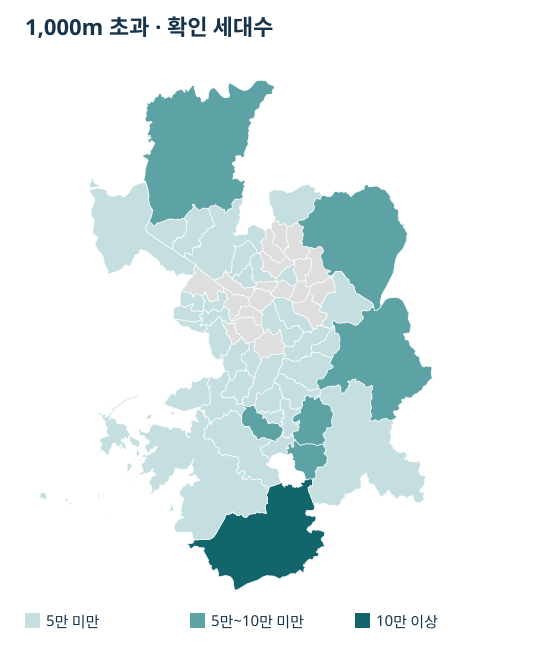
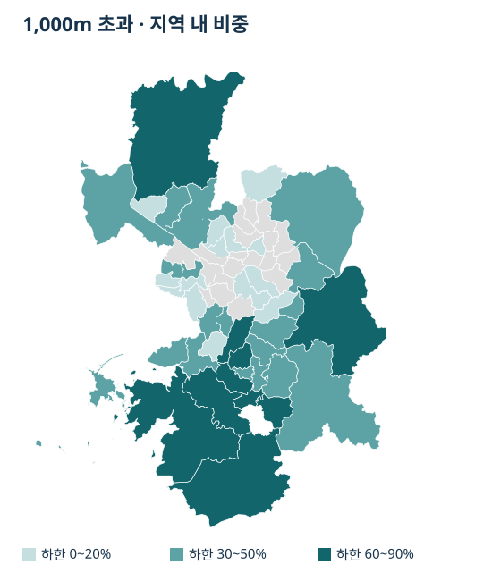
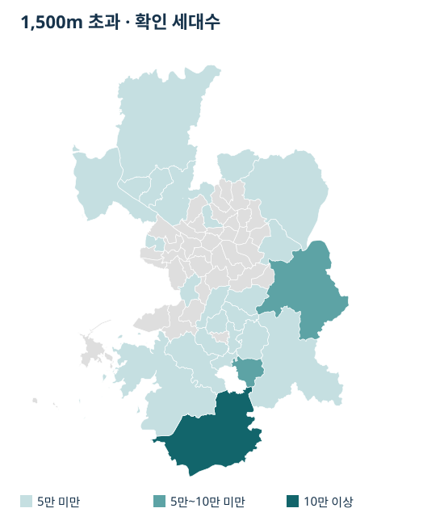
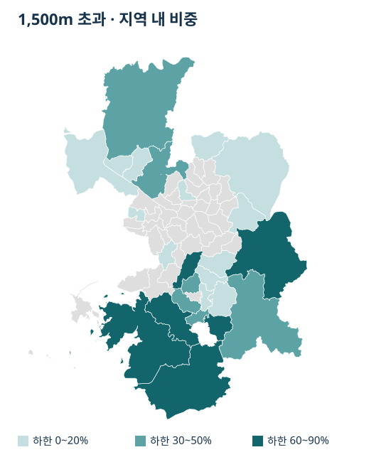

역까지의 거리 · 5 / 6
지하철역에서 1km 넘게 떨어진 아파트는 어디에 많을까?
서울·수집 경기 아파트의 직선 1km·1.5km 밖 세대수와 비중을 지도와 표로 비교합니다. 경기 36개 지역은 700m 안 세대수 비중과 1km 밖 세대수를 나란히 봅니다.
분석 기간 · 서울·수집 경기 현재 재고 · 역 직선 1km·1.5km 초과 확인 세대수 | 자료 기준일 · 2026-11-06
현재 확인 자료에서 지하철역까지 직선 1km를 넘는 아파트는 서울 16만 세대 이상~17만 세대 미만, 수집 경기 122만 세대 이상~123만 세대 미만입니다. 수집 경기 안에서도 바깥 세대가 많은 지역과 지역 전체에서 그 비중이 큰 지역은 다릅니다. 두 질문을 나누어 보면 내가 비교하려는 지역의 주거 규모와 역 거리 분포를 함께 볼 수 있습니다.
지도와 표에서 세대수와 비중을 나눠 봅니다
세대수는 거리 밖 아파트가 얼마나 모여 있는지를 보여 줍니다. 비중은 같은 지역에서 위치와 세대수가 확인된 아파트 가운데 거리 밖의 몫입니다. 세대수가 많은 큰 지역과 거리 밖 비중이 큰 지역은 같은 순서일 필요가 없습니다.
1km 초과에서 평택시는 13만 세대 이상~14만 세대 미만, 지역 내 비중은 80% 이상~90% 미만입니다. 화성시 만세구와 효행구의 지역 내 비중은 90% 이상~100% 이하에 놓입니다. 아래 표에서 각 지역의 규모와 비중을 따로 확인하세요. 같은 구간에 속한 지역끼리 세부 순위를 정할 수는 없습니다.
지도와 표의 지역 구분은 같은 시점의 행정구역을 사용해야 합니다. 화성시는 만세구·효행구·병점구·동탄구를 각각 표시합니다. 과거 화성시 단일 경계와 그대로 비교하면 지역 범위가 달라집니다.
1,000m 초과의 세대수와 비중


색은 옅은 순서로 5만 세대 미만, 5만 세대 이상~10만 세대 미만, 10만 세대 이상입니다. 회색은 표본 기준 미충족입니다. 같은 거리 표에서 지역별 구간을 확인할 수 있습니다. 지도를 누르면 큰 이미지로 열립니다.


색은 구간 하한을 기준으로 옅은 순서로 0~20%, 30~50%, 60~90%입니다. 회색은 표본 기준 미충족입니다. 같은 거리 표에서 지역별 구간을 확인할 수 있습니다. 지도를 누르면 큰 이미지로 열립니다.
1,000m 초과 세대수와 지역 내 비중 표 펼치기
| 지역 | 거리 밖 확인 세대수 | 지역 내 비중 |
|---|---|---|
| 서울 | 160,000세대 이상~170,000세대 미만 | 0% 이상~10% 이하 |
| 종로구 | 0세대 이상~10,000세대 미만 | 0% 이상~10% 미만 |
| 중구 | 표본 기준 미충족 | 표본 기준 미충족 |
| 용산구 | 표본 기준 미충족 | 표본 기준 미충족 |
| 성동구 | 표본 기준 미충족 | 표본 기준 미충족 |
| 광진구 | 표본 기준 미충족 | 표본 기준 미충족 |
| 동대문구 | 10,000세대 이상~20,000세대 미만 | 20% 이상~30% 미만 |
| 중랑구 | 표본 기준 미충족 | 표본 기준 미충족 |
| 성북구 | 표본 기준 미충족 | 표본 기준 미충족 |
| 강북구 | 표본 기준 미충족 | 표본 기준 미충족 |
| 도봉구 | 표본 기준 미충족 | 표본 기준 미충족 |
| 노원구 | 표본 기준 미충족 | 표본 기준 미충족 |
| 은평구 | 10,000세대 이상~20,000세대 미만 | 10% 이상~20% 미만 |
| 서대문구 | 0세대 이상~10,000세대 미만 | 10% 이상~20% 미만 |
| 마포구 | 표본 기준 미충족 | 표본 기준 미충족 |
| 양천구 | 20,000세대 이상~30,000세대 미만 | 30% 이상~40% 미만 |
| 강서구 | 표본 기준 미충족 | 표본 기준 미충족 |
| 구로구 | 0세대 이상~10,000세대 미만 | 0% 이상~10% 미만 |
| 금천구 | 표본 기준 미충족 | 표본 기준 미충족 |
| 영등포구 | 표본 기준 미충족 | 표본 기준 미충족 |
| 동작구 | 표본 기준 미충족 | 표본 기준 미충족 |
| 관악구 | 표본 기준 미충족 | 표본 기준 미충족 |
| 서초구 | 0세대 이상~10,000세대 미만 | 0% 이상~10% 미만 |
| 강남구 | 10,000세대 이상~20,000세대 미만 | 0% 이상~10% 미만 |
| 송파구 | 표본 기준 미충족 | 표본 기준 미충족 |
| 강동구 | 표본 기준 미충족 | 표본 기준 미충족 |
| 수집 경기 | 1,220,000세대 이상~1,230,000세대 미만 | 40% 초과~50% 이하 |
| 수원시 장안구 | 40,000세대 이상~50,000세대 미만 | 70% 이상~80% 미만 |
| 수원시 권선구 | 50,000세대 이상~60,000세대 미만 | 60% 이상~70% 미만 |
| 수원시 팔달구 | 10,000세대 이상~20,000세대 미만 | 30% 이상~40% 미만 |
| 수원시 영통구 | 30,000세대 이상~40,000세대 미만 | 40% 이상~50% 미만 |
| 성남시 수정구 | 0세대 이상~10,000세대 미만 | 20% 이상~30% 미만 |
| 성남시 중원구 | 10,000세대 이상~20,000세대 미만 | 40% 이상~50% 미만 |
| 성남시 분당구 | 30,000세대 이상~40,000세대 미만 | 30% 이상~40% 미만 |
| 의정부시 | 20,000세대 이상~30,000세대 미만 | 20% 이상~30% 미만 |
| 안양시 만안구 | 20,000세대 이상~30,000세대 미만 | 50% 이상~60% 미만 |
| 안양시 동안구 | 40,000세대 이상~50,000세대 미만 | 40% 이상~50% 미만 |
| 부천시 원미구 | 0세대 이상~10,000세대 미만 | 10% 이상~20% 미만 |
| 부천시 소사구 | 10,000세대 이상~20,000세대 미만 | 20% 이상~30% 미만 |
| 부천시 오정구 | 0세대 이상~10,000세대 미만 | 30% 이상~40% 미만 |
| 광명시 | 10,000세대 이상~20,000세대 미만 | 20% 이상~30% 미만 |
| 평택시 | 130,000세대 이상~140,000세대 미만 | 80% 이상~90% 미만 |
| 안산시 상록구 | 20,000세대 이상~30,000세대 미만 | 50% 이상~60% 미만 |
| 안산시 단원구 | 10,000세대 이상~20,000세대 미만 | 30% 이상~40% 미만 |
| 고양시 덕양구 | 40,000세대 이상~50,000세대 미만 | 40% 이상~50% 미만 |
| 고양시 일산동구 | 10,000세대 이상~20,000세대 미만 | 40% 이상~50% 미만 |
| 고양시 일산서구 | 10,000세대 이상~20,000세대 미만 | 20% 이상~30% 미만 |
| 과천시 | 표본 기준 미충족 | 표본 기준 미충족 |
| 구리시 | 표본 기준 미충족 | 표본 기준 미충족 |
| 남양주시 | 70,000세대 이상~80,000세대 미만 | 40% 이상~50% 미만 |
| 군포시 | 10,000세대 이상~20,000세대 미만 | 20% 이상~30% 미만 |
| 의왕시 | 30,000세대 이상~40,000세대 미만 | 70% 이상~80% 미만 |
| 하남시 | 30,000세대 이상~40,000세대 미만 | 40% 이상~50% 미만 |
| 용인시 처인구 | 20,000세대 이상~30,000세대 미만 | 30% 이상~40% 미만 |
| 용인시 기흥구 | 50,000세대 이상~60,000세대 미만 | 50% 이상~60% 미만 |
| 용인시 수지구 | 30,000세대 이상~40,000세대 미만 | 30% 이상~40% 미만 |
| 파주시 | 60,000세대 이상~70,000세대 미만 | 60% 이상~70% 미만 |
| 김포시 | 30,000세대 이상~40,000세대 미만 | 30% 이상~40% 미만 |
| 화성시 만세구 | 40,000세대 이상~50,000세대 미만 | 90% 이상~100% 이하 |
| 화성시 효행구 | 30,000세대 이상~40,000세대 미만 | 90% 이상~100% 이하 |
| 화성시 병점구 | 30,000세대 이상~40,000세대 미만 | 60% 이상~70% 미만 |
| 화성시 동탄구 | 80,000세대 이상~90,000세대 미만 | 80% 이상~90% 미만 |
| 광주시 | 50,000세대 이상~60,000세대 미만 | 80% 이상~90% 미만 |
1,500m 초과의 세대수와 비중


색은 옅은 순서로 5만 세대 미만, 5만 세대 이상~10만 세대 미만, 10만 세대 이상입니다. 회색은 표본 기준 미충족입니다. 같은 거리 표에서 지역별 구간을 확인할 수 있습니다. 지도를 누르면 큰 이미지로 열립니다.


색은 구간 하한을 기준으로 옅은 순서로 0~20%, 30~50%, 60~90%입니다. 회색은 표본 기준 미충족입니다. 같은 거리 표에서 지역별 구간을 확인할 수 있습니다. 지도를 누르면 큰 이미지로 열립니다.
1,500m 초과 세대수와 지역 내 비중 표 펼치기
| 지역 | 거리 밖 확인 세대수 | 지역 내 비중 |
|---|---|---|
| 서울 | 40,000세대 이상~50,000세대 미만 | 0% 이상~10% 이하 |
| 종로구 | 0세대 이상~10,000세대 미만 | 0% 이상~10% 미만 |
| 중구 | 표본 기준 미충족 | 표본 기준 미충족 |
| 용산구 | 표본 기준 미충족 | 표본 기준 미충족 |
| 성동구 | 표본 기준 미충족 | 표본 기준 미충족 |
| 광진구 | 표본 기준 미충족 | 표본 기준 미충족 |
| 동대문구 | 표본 기준 미충족 | 표본 기준 미충족 |
| 중랑구 | 표본 기준 미충족 | 표본 기준 미충족 |
| 성북구 | 표본 기준 미충족 | 표본 기준 미충족 |
| 강북구 | 표본 기준 미충족 | 표본 기준 미충족 |
| 도봉구 | 표본 기준 미충족 | 표본 기준 미충족 |
| 노원구 | 표본 기준 미충족 | 표본 기준 미충족 |
| 은평구 | 표본 기준 미충족 | 표본 기준 미충족 |
| 서대문구 | 표본 기준 미충족 | 표본 기준 미충족 |
| 마포구 | 표본 기준 미충족 | 표본 기준 미충족 |
| 양천구 | 표본 기준 미충족 | 표본 기준 미충족 |
| 강서구 | 표본 기준 미충족 | 표본 기준 미충족 |
| 구로구 | 표본 기준 미충족 | 표본 기준 미충족 |
| 금천구 | 표본 기준 미충족 | 표본 기준 미충족 |
| 영등포구 | 표본 기준 미충족 | 표본 기준 미충족 |
| 동작구 | 표본 기준 미충족 | 표본 기준 미충족 |
| 관악구 | 표본 기준 미충족 | 표본 기준 미충족 |
| 서초구 | 표본 기준 미충족 | 표본 기준 미충족 |
| 강남구 | 표본 기준 미충족 | 표본 기준 미충족 |
| 송파구 | 표본 기준 미충족 | 표본 기준 미충족 |
| 강동구 | 표본 기준 미충족 | 표본 기준 미충족 |
| 수집 경기 | 740,000세대 이상~750,000세대 미만 | 20% 초과~30% 이하 |
| 수원시 장안구 | 20,000세대 이상~30,000세대 미만 | 40% 이상~50% 미만 |
| 수원시 권선구 | 20,000세대 이상~30,000세대 미만 | 30% 이상~40% 미만 |
| 수원시 팔달구 | 표본 기준 미충족 | 표본 기준 미충족 |
| 수원시 영통구 | 10,000세대 이상~20,000세대 미만 | 10% 이상~20% 미만 |
| 성남시 수정구 | 표본 기준 미충족 | 표본 기준 미충족 |
| 성남시 중원구 | 표본 기준 미충족 | 표본 기준 미충족 |
| 성남시 분당구 | 10,000세대 이상~20,000세대 미만 | 20% 이상~30% 미만 |
| 의정부시 | 10,000세대 이상~20,000세대 미만 | 10% 이상~20% 미만 |
| 안양시 만안구 | 0세대 이상~10,000세대 미만 | 10% 이상~20% 미만 |
| 안양시 동안구 | 표본 기준 미충족 | 표본 기준 미충족 |
| 부천시 원미구 | 표본 기준 미충족 | 표본 기준 미충족 |
| 부천시 소사구 | 표본 기준 미충족 | 표본 기준 미충족 |
| 부천시 오정구 | 0세대 이상~10,000세대 미만 | 20% 이상~30% 미만 |
| 광명시 | 표본 기준 미충족 | 표본 기준 미충족 |
| 평택시 | 100,000세대 이상~110,000세대 미만 | 60% 이상~70% 미만 |
| 안산시 상록구 | 표본 기준 미충족 | 표본 기준 미충족 |
| 안산시 단원구 | 표본 기준 미충족 | 표본 기준 미충족 |
| 고양시 덕양구 | 20,000세대 이상~30,000세대 미만 | 30% 이상~40% 미만 |
| 고양시 일산동구 | 10,000세대 이상~20,000세대 미만 | 20% 이상~30% 미만 |
| 고양시 일산서구 | 0세대 이상~10,000세대 미만 | 0% 이상~10% 미만 |
| 과천시 | 표본 기준 미충족 | 표본 기준 미충족 |
| 구리시 | 표본 기준 미충족 | 표본 기준 미충족 |
| 남양주시 | 30,000세대 이상~40,000세대 미만 | 20% 이상~30% 미만 |
| 군포시 | 표본 기준 미충족 | 표본 기준 미충족 |
| 의왕시 | 20,000세대 이상~30,000세대 미만 | 60% 이상~70% 미만 |
| 하남시 | 10,000세대 이상~20,000세대 미만 | 20% 이상~30% 미만 |
| 용인시 처인구 | 10,000세대 이상~20,000세대 미만 | 30% 이상~40% 미만 |
| 용인시 기흥구 | 20,000세대 이상~30,000세대 미만 | 20% 이상~30% 미만 |
| 용인시 수지구 | 10,000세대 이상~20,000세대 미만 | 10% 이상~20% 미만 |
| 파주시 | 30,000세대 이상~40,000세대 미만 | 30% 이상~40% 미만 |
| 김포시 | 0세대 이상~10,000세대 미만 | 0% 이상~10% 미만 |
| 화성시 만세구 | 40,000세대 이상~50,000세대 미만 | 90% 이상~100% 이하 |
| 화성시 효행구 | 30,000세대 이상~40,000세대 미만 | 90% 이상~100% 이하 |
| 화성시 병점구 | 20,000세대 이상~30,000세대 미만 | 40% 이상~50% 미만 |
| 화성시 동탄구 | 70,000세대 이상~80,000세대 미만 | 70% 이상~80% 미만 |
| 광주시 | 50,000세대 이상~60,000세대 미만 | 70% 이상~80% 미만 |
경기에서는 역 안의 비중과 역 밖의 규모를 함께 봅니다
역에서 먼 아파트가 몇 세대인지와 가까운 아파트의 몫이 얼마나 큰지는 다른 질문입니다. 수집 경기 36개 지역에서 역 직선 700m 안 확인 세대수 비중과 1km 밖 확인 세대수를 나란히 비교합니다. 이 표만으로 어느 도시에 철도가 아예 없는지 판단할 수는 없습니다.
성남시 분당구와 하남시는 1km 밖 확인 세대수가 모두 3만 세대 이상~4만 세대 미만입니다. 그러나 700m 안 확인 세대수 비중은 분당구 40% 이상~50% 미만, 하남시 30% 이상~40% 미만입니다. 같은 바깥 수량 구간에서도 안쪽 비중은 다를 수 있습니다. 두 지역의 전체 규모나 개별 아파트의 교통 여건이 같다는 뜻은 아닙니다.
수집 경기 36개 지역의 700m 안 비중 그래프 펼치기
비교에서 이름을 든 성남시 분당구와 하남시를 강조했습니다. 표시 보류는 0%가 아닙니다. 막대 전체가 표시 구간입니다.
수집 경기 36개 지역의 두 지표 표 펼치기
| 지역 | 700m 안 확인 세대수 비중 | 1km 밖 확인 세대수 |
|---|---|---|
| 수원시 장안구 | 표시 보류 | 40,000세대 이상 50,000세대 미만 |
| 수원시 권선구 | 20% 이상 30% 미만 | 50,000세대 이상 60,000세대 미만 |
| 수원시 팔달구 | 표시 보류 | 10,000세대 이상 20,000세대 미만 |
| 수원시 영통구 | 30% 이상 40% 미만 | 30,000세대 이상 40,000세대 미만 |
| 성남시 수정구 | 표시 보류 | 0세대 이상 10,000세대 미만 |
| 성남시 중원구 | 30% 이상 40% 미만 | 10,000세대 이상 20,000세대 미만 |
| 성남시 분당구 | 40% 이상 50% 미만 | 30,000세대 이상 40,000세대 미만 |
| 의정부시 | 60% 이상 70% 미만 | 20,000세대 이상 30,000세대 미만 |
| 안양시 만안구 | 20% 이상 30% 미만 | 20,000세대 이상 30,000세대 미만 |
| 안양시 동안구 | 20% 이상 30% 미만 | 40,000세대 이상 50,000세대 미만 |
| 부천시 원미구 | 50% 이상 60% 미만 | 0세대 이상 10,000세대 미만 |
| 부천시 소사구 | 40% 이상 50% 미만 | 10,000세대 이상 20,000세대 미만 |
| 부천시 오정구 | 30% 이상 40% 미만 | 0세대 이상 10,000세대 미만 |
| 광명시 | 40% 이상 50% 미만 | 10,000세대 이상 20,000세대 미만 |
| 평택시 | 10% 이상 20% 미만 | 130,000세대 이상 140,000세대 미만 |
| 안산시 상록구 | 30% 이상 40% 미만 | 20,000세대 이상 30,000세대 미만 |
| 안산시 단원구 | 표시 보류 | 10,000세대 이상 20,000세대 미만 |
| 고양시 덕양구 | 30% 이상 40% 미만 | 40,000세대 이상 50,000세대 미만 |
| 고양시 일산동구 | 표시 보류 | 10,000세대 이상 20,000세대 미만 |
| 고양시 일산서구 | 50% 이상 60% 미만 | 10,000세대 이상 20,000세대 미만 |
| 과천시 | 표시 보류 | 표본 기준 미충족 |
| 구리시 | 60% 이상 70% 미만 | 표본 기준 미충족 |
| 남양주시 | 20% 이상 30% 미만 | 70,000세대 이상 80,000세대 미만 |
| 군포시 | 50% 이상 60% 미만 | 10,000세대 이상 20,000세대 미만 |
| 의왕시 | 표시 보류 | 30,000세대 이상 40,000세대 미만 |
| 하남시 | 30% 이상 40% 미만 | 30,000세대 이상 40,000세대 미만 |
| 용인시 처인구 | 40% 이상 50% 미만 | 20,000세대 이상 30,000세대 미만 |
| 용인시 기흥구 | 30% 이상 40% 미만 | 50,000세대 이상 60,000세대 미만 |
| 용인시 수지구 | 30% 이상 40% 미만 | 30,000세대 이상 40,000세대 미만 |
| 파주시 | 20% 이상 30% 미만 | 60,000세대 이상 70,000세대 미만 |
| 김포시 | 30% 이상 40% 미만 | 30,000세대 이상 40,000세대 미만 |
| 화성시 만세구 | 0% 이상 10% 미만 | 40,000세대 이상 50,000세대 미만 |
| 화성시 효행구 | 0% 이상 10% 미만 | 30,000세대 이상 40,000세대 미만 |
| 화성시 병점구 | 표시 보류 | 30,000세대 이상 40,000세대 미만 |
| 화성시 동탄구 | 표시 보류 | 80,000세대 이상 90,000세대 미만 |
| 광주시 | 표시 보류 | 50,000세대 이상 60,000세대 미만 |
700m 이내와 1km 초과 사이에는 700m 초과~1,000m 이하가 남습니다. 하나는 비중이고 하나는 세대수이므로 더해서 100%로 만들 수 없습니다. 단지 위치와 세대수가 확인된 같은 재고를 쓰지만 지역 전체 주택·매물·인구를 모두 포함한 것은 아닙니다.
700m 비중의 표시 보류와 바깥 수량의 표본 기준 미충족을 각각 유지했습니다. 어느 쪽도 0이나 철도 부재를 뜻하지 않습니다. 같은 표시 구간 안에서 정확한 지역 순위를 나누지 않습니다. 경기도 전체가 아니라 수집한 36개 시·구이며 화성시 네 구도 각각 셉니다.
거리의 분모와 원래 700m 표는 서울·경기 역세권 비율에서, 1km·1.5km 밖의 세대수와 비중 지도는 이 글의 해당 거리 표에서 확인하세요. 집 후보를 정할 때에는 필요한 노선과 출입구·버스 경로를 따로 살펴봅니다.
집 후보를 볼 때 직선거리 다음에 확인할 것
가장 가까운 역이 직선으로 1km 밖이어도 버스나 다른 교통수단으로 이용하기 편할 수 있습니다. 반대로 가까운 역도 출입구 위치, 큰길이나 하천, 경사에 따라 실제 경로가 길어질 수 있습니다. 집 후보를 살펴볼 때는 출입구까지의 보행 경로와 실제 통근 시간대의 버스 배차, 환승 횟수를 따로 확인하세요.
집계 방법과 자료 범위
서울 25개 구와 수집 경기 36개 지역의 현재 확인 아파트를 대상으로 했습니다. 단지에 신고 위치가 여러 개 있으면 위치가 모두 확인된 경우에 가장 가까운 거리를 사용했습니다. 1,000m 또는 1,500m에 정확히 걸치는 값은 이내에 포함했습니다. 세대수가 확인된 단지만 비중의 분모에 포함했습니다. 위치 미확인분과 세대수 미확인분 때문에 지역 전체 아파트와 범위가 다를 수 있습니다.
거리 밖 단지가 5개 미만이거나 한 단지의 세대수 기여가 20%를 넘으면 표본 기준 미충족으로 표시했습니다. 이 표시에는 거리 밖 세대가 없다는 뜻이 담겨 있지 않습니다. 지도는 개인 주소와 단지 위치를 표시하지 않고 지역별 구간을 비교하도록 구성합니다.
경계 원자료는 통계청 통계지리정보서비스(SGIS, 공공누리 제1유형)이며 vuski/admdongkor가 가공한 CC BY 4.0 자료입니다. 2026-10-01 행정동을 시군구로 합치고 지도용으로 단순화했습니다. 경계 가공 원천 · SGIS · CC BY 4.0
분석·집필: 파파펭귄 (Nobot Kang). 에이전트로 근거 대조·계산·초안 검토를 보조했습니다.